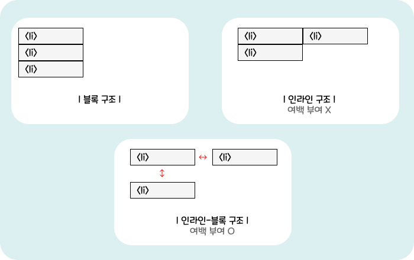

HTML 레퍼런스 북
블록/인라인
오늘은 웹사이트의 기본중의 기본이죠. 비전공자도 어디선가 들어봤을법한 키워드!
정말 이것도 모르고 어디가서 코딩한다고 하면 안되겠죠?
블록 구조와 인라인 구조에 대해서 알아보겠습니다. 각각 간단히 설명 후 비교하여 설명하는게 더 이해하기 쉬우므로 비교위주로 설명 들어갈게요~
01_ 블록 레벨 요소
마크업 할 때 줄이 바뀌는 특성을 가집니다. 좀 더 알기 쉽게 표현하자면 한줄에 하나만 표현된다는 것입니다. 즉, 가로 정렬이 안되는 것입니다.
< !DOCTYPE html >
< html lang="ko" >
< head >
<meta charset = "UTF-8">
<title>블록 레벨 요소</title>
< /head >
< body >
<h1>블록 레벨 요소</h1>
<h2>블록 레벨 요소</h2>
<p>블록 레벨 요소</p>
< /body >
< /html >
//결과
블록 레벨 요소
블록 레벨 요소
블록 레벨 요소
<h>요소들은 블록의 성질을 가지고 있어 화면상 줄 바꿈 현상이 일어나는 걸 확인할 수 있습니다.
02_ 인라인 요소(Inline Element)
줄 바꿈 특성이 없어 행이 바뀌지 않고 한 줄로 출력됨. 그래서 가로정렬이 됩니다.
< !DOCTYPE html >
< html lang="ko" >
< head >
<meta charset = "UTF-8">
<title>인라인 요소</title>
< /head >
< body >
<strong>인라인 요소</strong>
<span>인라인 요소는 한 줄로 출력됩니다.</span>
< /body >
< /html >
//결과
인라인 요소 인라인 요소는 한 줄로 출력됩니다.
<strong>, <span>요소들은 인라인 성질을 지니고 있어 한 줄로 출력됩니다.
03_ 블록 레벨 요소와 인라인 요소의 특성
| 요소 유형 | 특징 |
|---|---|
| 블록 레벨 요소 | 1. 블록 레벨 요소는 줄 바꿈이 일어납니다. 2. 블록 레벨 요소는 텍스트(문자)와 인라인 요소를 자식 요소로 포함할 수 있습니다. 3. 블록 레벨 요소 중에는 블록 레벨 요소를 자식 요소를 포함 할 수 있는 요소와 포함할 수 없는 요소가 있습니다. 4. 인라인 요소 보다 더 큰 구조를 생성할 수 있습니다. 5. 새로운 줄에서 시작합니다. |
| 인라인 요소 | 1. 인라인 요소는 줄 바꿈이 일어나지 않습니다. 2. 인라인 요소는 텍스트(문자)와 인라인 요소를 자식 요소로 포함할 수 있습니다. 3. 인라인 요소는 블록 레벨 요소를 자식 요소로 포함할 수 없습니다. 4.줄의 어느곳에서나 시작이 가능합니다. |
콘텐츠의 종류와 태그
| 콘텐츠 종류 | 내용 | 해당 요소 |
|---|---|---|
| 메타데이터 콘텐츠 (Metadata Content) |
<head> 태그 안에 포함되는 요소들로 콘텐츠의 표현, 동작 설정, 문서 관계 설정, 정보전달을 포함하는 요소 의미 | <base>, <link>, <meta>, <noscript>, <script>, <style>, <title> ... |
| 플로우 콘텐츠 (Flow Content) |
<body> 태그 안에 포함되는 대부분의 요소들로 내용 흐름에 관한 요소를 의미 | <h1>, <h2>, <h3>, <h4>, <h5>, <h6>, <address>, <p>, <a>, <img>, <ul>, <ol>, <dl>, <table>, <form> ... |
| 섹션 콘텐츠 (Sectioning Content) |
heading과 footer의 범위를 정의하는 요소를 의미 | <article>, <aside>, <nav>, <section> |
| 헤딩 콘텐츠 (Heading Content) |
섹션의 헤더를 정의하는 요소를 의미 | <h1>, <h2>, <h3>, <h4>, <h5>, <h6> |
| 프레이징 콘텐츠 (Phrasing Content) |
텍스트를 마크업하는 요소를 의미 | <a>, <em>, <strong>, <sub>, <sup>, <label>... |
| 임베디드 콘텐츠 (Embedded Content) |
HTML 문서에 다른 리소스를 삽입하는 요소 의미 | <img>, <audio>, <video>, <iframe>... |
| 인터랙티브 콘텐츠 (Interactive Content) |
사용자의 상호작용 위한 요소 | <a>, <button>, <audio>, <video>, <select> ... |
04_ inline-block
인라인 구조 중에서도 특이한 속성값이 존재합니다. 바로 블록과 인라인의 중간 성질을 지닌 inline-block입니다.
■ 무슨 특징이...?
<ul>, <li>태그의 경우 대표적인 블록 구조를 지닌 태그입니다. 그렇기 때문에 각각 한줄씩 출력이 되는데요. 이 리스트목록들을 한줄로 표현하되, padding이나 margin 값까지 주고 싶을 때가 있습니다. 본디 한줄로 표현하기 위해서는 단순히 인라인 속성만 부여하면 되겠지만 인라인구조특성상 여백을 부여할 수가 없죠. 그럴때 사용하는 것이 이 인라인-블럭 입니다.
